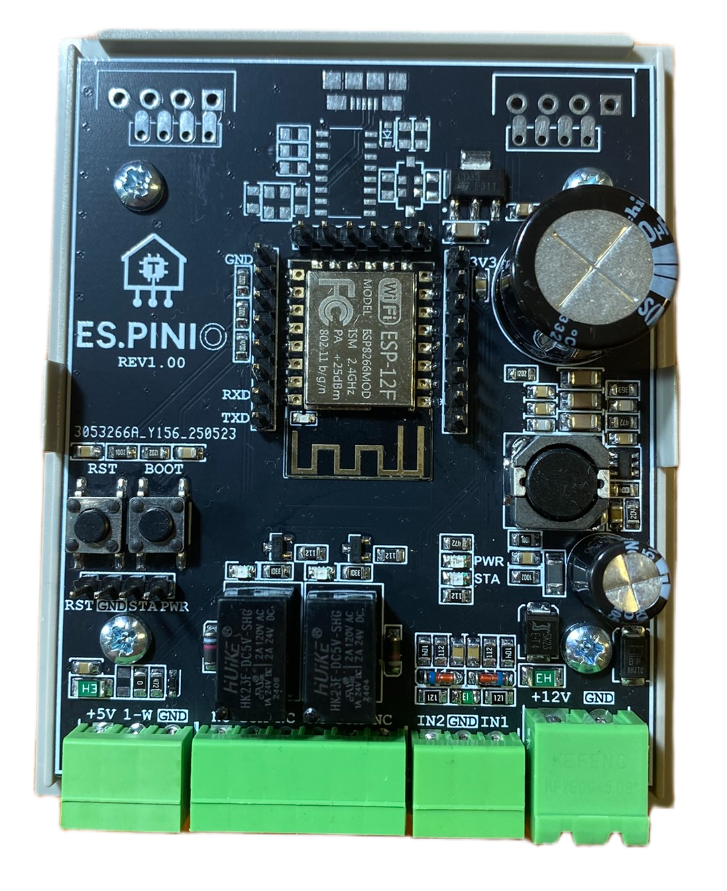
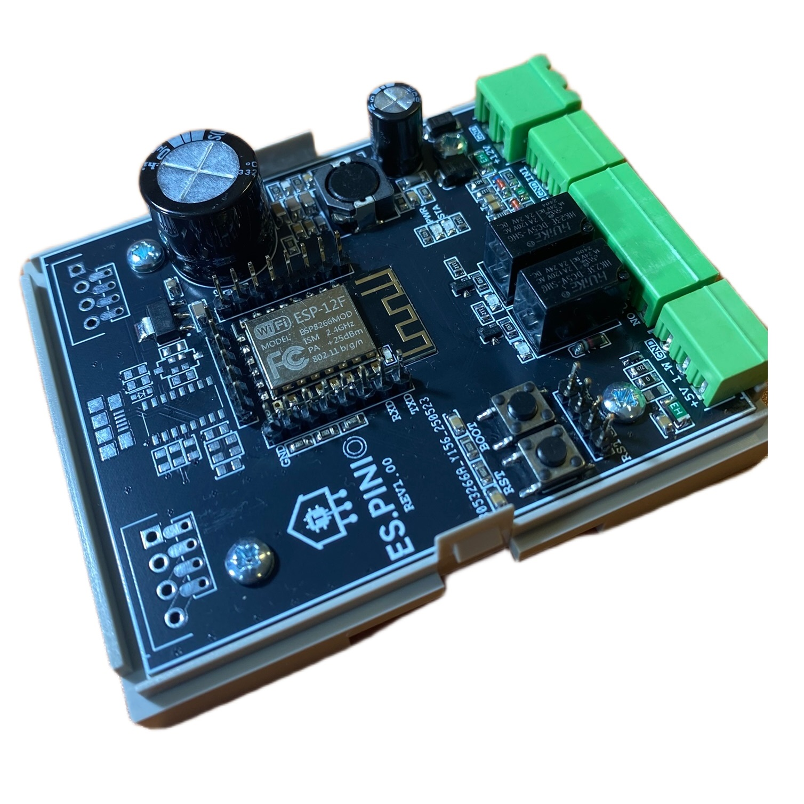
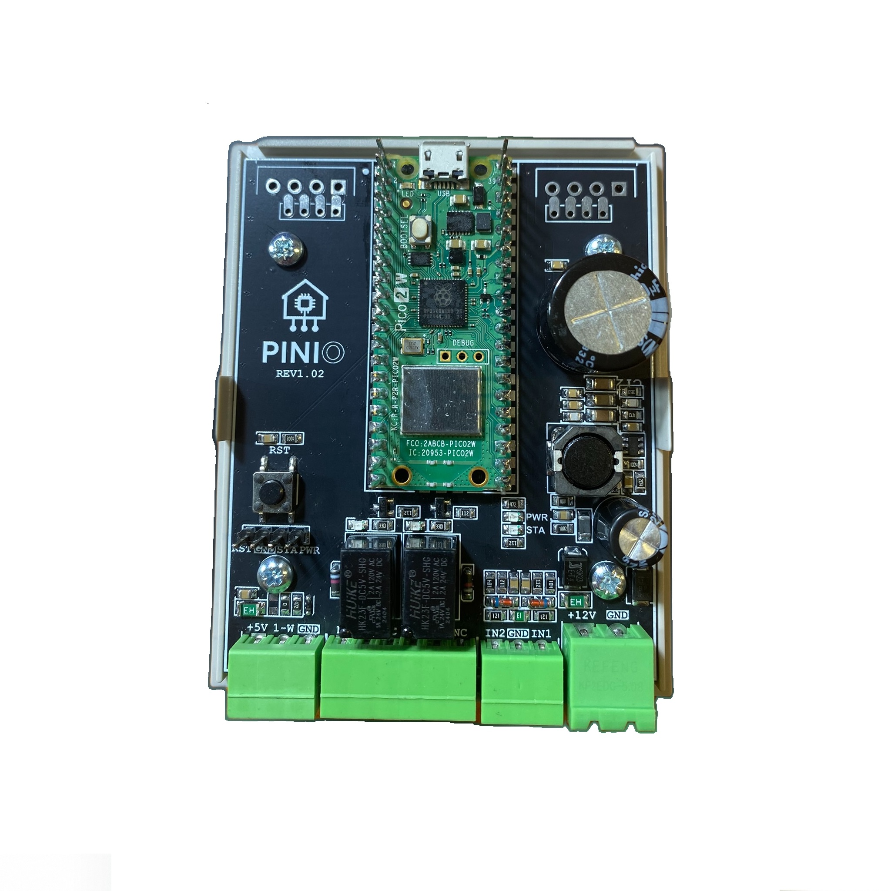
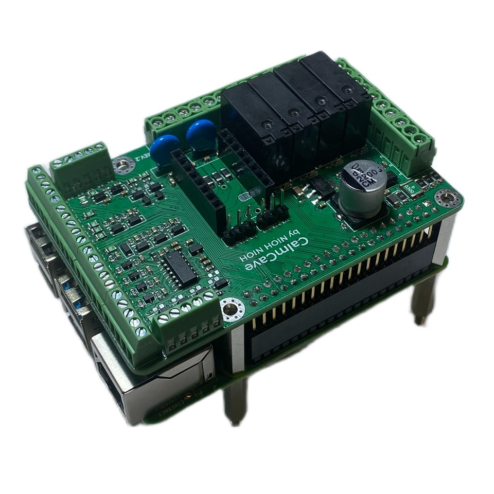
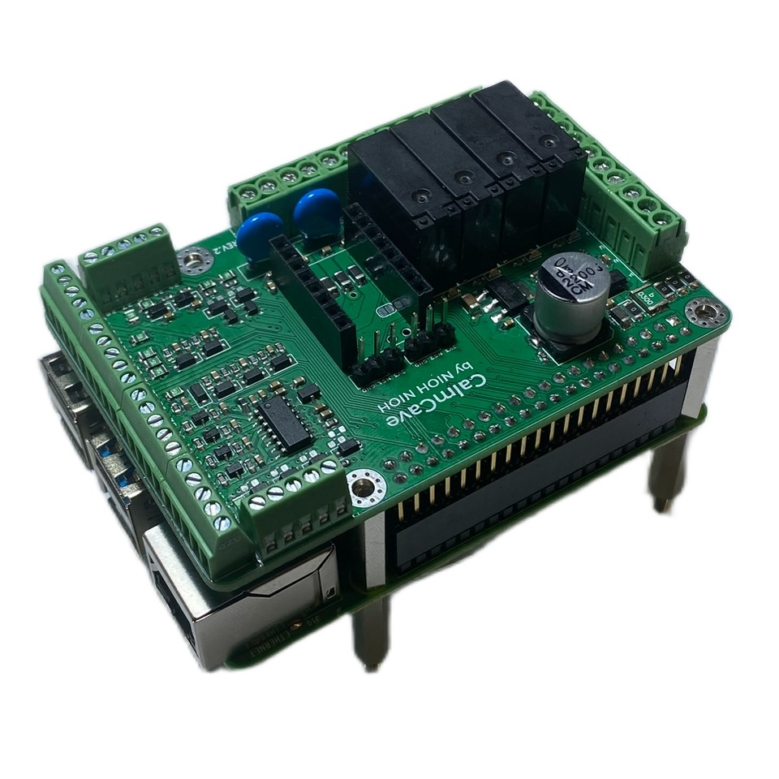

×
Sterownik automatyki domowej




Sterowniki automatyki domowej o kompaktowych wymiarach, przeznaczone do montażu w obudowach na szynę DIN.
Urządzenia oparte są na popularnych modułach Raspberry Pi oraz ESP, co umożliwia elastyczną konfigurację oraz łatwą integrację z systemami smart home.
Sterowniki wyposażone są w:
• wyjścia przekaźnikowe,
• wejścia cyfrowe,
• magistralę 1-Wire do obsługi czujników.
Szczególny nacisk został położony na sekcję zasilania, zaprojektowaną w celu zapewnienia wysokiej stabilności napięć zasilających oraz ochrony przed zawieszaniem się systemu i niekontrolowanymi restartami.
Projekt wykonany w całości samodzielnie – od koncepcji i projektu, przez schemat oraz PCB, aż po uruchomienie i produkcję seryjną
 
